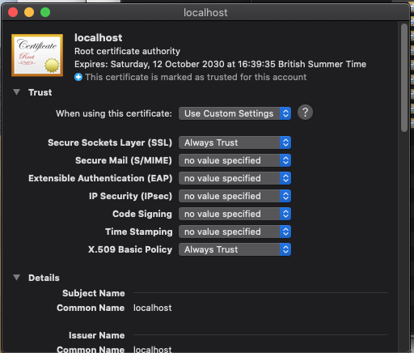

AdminUI can be deployed as a Docker image
Installation Prerequisites
Before beginning installation, please ensure that you have downloaded:
Before running AdminUI using Docker, Docker must be configured with the following:
- If running on Windows ensure you are using Linux containers - see Docker instructions on switching containers for more information
- If using our provided docker-compose.yml file ensure you have Docker Compose installed. To check this, run the
docker-composecommand
Configuration
Ports
Port configuration in Docker follows the format host:container.
e.g Changing the "Ports" section of AdminUI in the docker-compose file to 5001:6001 would mean you could contact AdminUI by browsing to http://localhost:6001
NOTE - Changing any of these will mean the configuration in the rest of the docker-compose file will have to change.
Environment Variables
Environment variables are also available for setting application specifics. If you are using the docker-compose file they are formatted as follows:
environment:
- UiUrl=http://localhost:5010
- ApiUrl=http://localhost:5011
- AuthorityUrl=http://ids:5013
The minimum configuration required is:
DbProviderThis sets the database type you are using. Supported types and their values are:SqlServerMySqlPostgreSql
IdentityConnectionStringThe connection string for your Identity database (users)IdentityServerConnectionStringThe connection string for your IdentityServer database (clients, resources & grants)AuthorityUrlUrl of the IdentityServer installation protecting the UI. Must use HTTPSUiUrlUrl of AdminUI. Must use HTTPSRequireHttpsMetadataSet totrueorfalseif you want to ensure IdentityServer discovery endpoint uses TLS. Must betruefor productionLicenseKeyThe full license key for AdminUIAdminUIClientSecretThe client secret for AdminUI. Any random string.AuthorityUrlUrl of the IdentityServer installation protecting AdminUI. Must use HTTPS
The full list of configuration options are avaliable here
IdentityServer & Database Resolution
If you are not using the AdminUI Integration IdentityServer included in the docker-compose file ensure that your IdentityServer site is either publicly resolvable via DNS or running locally on the Docker host machine on all network devices (e.g: http://+:5555/).
If you are running locally, ensure that the AuthorityUrl setting uses the IP address of the local Docker network device - For Mac and Window this is possible by using host.docker.internal, on Linux localhost will work.
For more information regarding networking with Docker on operating systems other than Linux please see here for Windows and here for MacOS.
Any used databases must accept remote connections. If this database is on your Docker host machine, you can use the IP address of your Docker network device in the connection string.
If you are running IdentityServer and the database locally to the Docker host machine, also ensure that your firewall allows connections on the necessary ports.
Getting The Images
The docker images used for AdminUI can be found on DockerHub. If you are having trouble getting the images you will need to login in to your Docker Hub account with the following command:
docker login
First Run
If Using the docker-compose file the entrypoint secton of the AdminUI image will run migrations - there is more information on this in the docker-compose section below. Otherwise the container will just start AdminUI without running migrations. If you would like to see and/or modify which migrations are run please see our migrations documentation.
Docker Demo Walkthrough
To start browse to your hosts files, and add an entry as follows:
<host ip address> ids
On Windows, your host file is usually found at C:\Windows\System32\Drivers\etc\hosts
On Linux and MacOS, your host file is usually found at /etc/hosts
To find your host ip you can run the following commands:
macOS: ifconfig | grep "inet " | grep -v 127.0.0.1
Windows: ipconfig
Linux:
ifconfig
If you are not using our AdminUI Integration IdentityServer included in the docker-compose file you do not need to add the IdentityServer (ids) mapping assuming your identityserver is publically resolvable or is running on the host machine.
As of 3.1.2 the demo now uses nginx as a reverse proxy and https forwarding service. This works as detailed below:
- The docker demo is now started via a script file named StartIds.ps1 or StartIds.sh.
- The powershell script will run on all platforms with PowerShell core installed. If you do not have PowerShell core installed you can run the shell script. This shell script may need execute permissions (
chmod +x startIdS.sh). - The StartIds script creates a temporary container that builds a cert which is then placed in a shared volume.
- The script then runs the
docker-compose upcommand. - The Docker Compose builds and runs the 3 main containers using the 3 Dockerfiles provided. These Dockerfiles take our base images and install the cert created in step 1 of the script file.
You will need to install the cert from the /cert folder after running the startIdS script and accept the certificate in browser on each website individually (on MacOS this needs to be done in Safari).
Note - When installing the certificate On MacOS you must accept the following options for the certificate to install correctly:

Please see the individual files for reference, starting with the StartIds.sh or StartIds.psh
On startup the AdminUI image will use a script within the container that will wait for the MySql databse inside the compose-file and once this has fully setup will run migrations.
You should now be able to access AdminUI on https://localhost:5010.
Modifying the docker-compose file
If you want to modify any of the ports used in the demo please ensure you have edited them in both the nginx.conf and the docker-compose files.
If you want to modify the docker-compose file to use a database setup outside of the docker-compose file or a database that isn't MySql you will need to change the configuration of the API.
The entrypoint section of AdminUI is currently setup to wait for the DB container in the docker-compose file. To make the AdminUI container wait for your db you can pass in the IP of the database as the first parameter and the port as the second. e.g
ui:
entrypoint: /app/DbStart.sh host.docker.internal 1433
If you know your database will already be running it is possible to change this section to just run migrations like so:
ui:
entrypoint: dotnet IdentityExpress.Manager.UI.dll -migrate all && dotnet IdentityExpress.Manager.UI.dll
Deploying Docker Images Separately
Note - The base image is available at rocksolidknowledge/adminui.
Ports used can then be set as -p 5000:5000 and environment variables as -e "AuthorityUrl=http://ids:5003"
Making Docker Public with a Reverse Proxy
To make the Docker containers public, we first need to add a web server to the mix. This web server will act as a reverse proxy, forwarding all calls to our running Docker instances. These web servers do not need to dockerized.
IIS Reverse Proxy
To setup IIS to act as a reverse proxy, there are two prerequisites that need to be installed within IIS:
- URL Rewrite Module
- Application Request Routing
Once these are installed we can then go to the site we want to configure and select 'URL Rewrite' found in the IIS section.

We then need to use "Add Rule(s)...", found in the Actions section.
We can then use the Reverse proxy template, found in the Inbound and Outbound Rules section.

Now we need to set the Inbound Rule, telling IIS where to forward requests to. By default this would be http://localhost:5000. If your Docker container is running HTTPS, ensure you disable SSL Offloading, ensuring TLS is maintained.
We also need to configure an Outbound Rule, to allow IIS to return responses from our Docker container using your site URL instead of the Docker container responding directly. Here the From address needs to be the domain of your Docker container (e.g. http://localhost:5000) and the To address your sites address (e.g. api.docker.com).
FAQ
Why don't my Docker commands work on Linux?
Ensure you have sufficient privileges.
What do I do if I experience a port clash?
You may experience a scenario where you have a clash between ports in-use on your host machine and the ports specified in the docker-compose.yml file. Port mappings in the docker-compose.yml file are specified in host:container pairs. You can change the host port in any mapping but be careful to change all occurrences of the usage of that host port in other environment variables used in the docker-compose.yml file.
Connecting to Databases on Docker Host Machine
To connect a container to a local database running on the Docker host machine, ensure you have configured the following:
- Enable remote connections to the database
- Enable firewall rule to allow connection using the configured port number
- Docker now provides
host.docker.internalfor connecting to the host - e.g
IdentityConnectionString=Server=host.docker.internal,1433;User Id=docker;Password=Welkom1234!;Database=IdentityExpressDb;
Docker vulnerabilities scanning
Before publishing docker images we run them through a security scan, checking for known CVE's in dependencies. However, vulnerabilities may be published after we release. In this instance we will do the following:
- Try update our base image (For both the UI and API this is the microsoft .net core image though this may not be updated to fix the CVE).
- If we cannot update our base image we will verify the and asses the issue.
- If Microsoft have not updated the issue and we deem it important we will patch our image.
- If we don't deem it to be an issue but you need it fixed, there are steps to patch the image yourself.
Method 1.
Use the docker run --user root <image name> command to gain root access in the container, apply the fix yourself and run docker commit to save the image and retag it with the CVE fixed.
Method 2 (recommended).
Create a dockerfile using the FROM command and change the user to root using USER root. For example in one of our alpine images there was a vulnerability discovered in apk-tools 2.12.5-r0. An example dockerfile that fixes this issue would look like the following:
FROM rocksolidknowledge/adminui:5.2.1-alpine
USER root
RUN apk add apk-tools=2.12.7-r0
USER identityexpress
We change the user back to identityexpress user after the fix as we don't want the default user to have root permissions.
Using the usual docker build command you can build and tag the resulting image. For more information on building docker containers please see the docker documentation here.